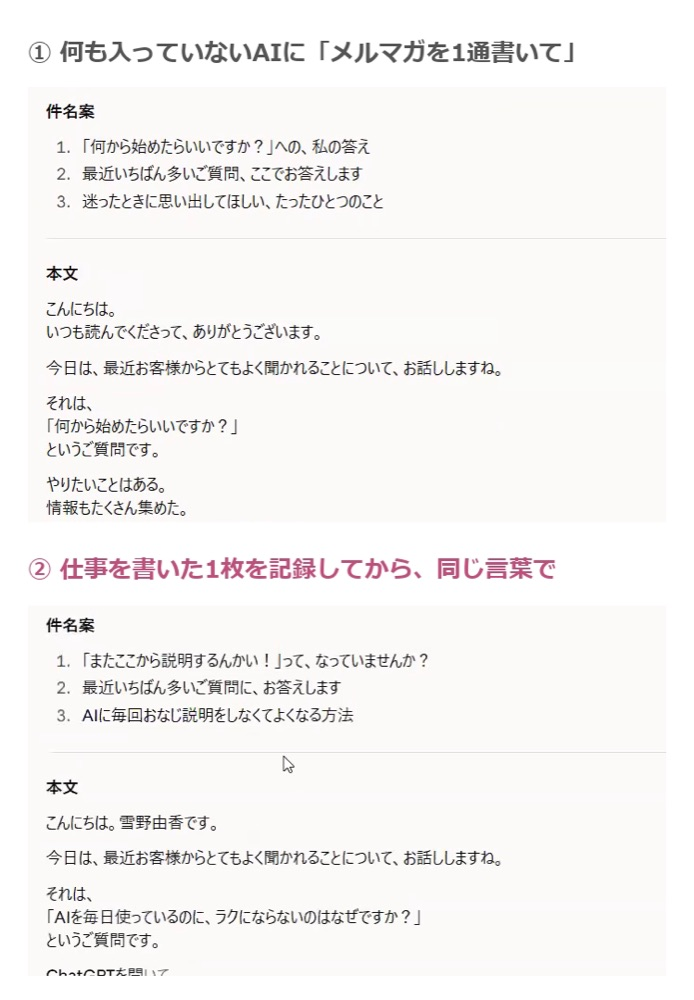

お申し込みは 締め切りました！
たくさんのお申し込み、 ありがとうございました＾＾
「これ、お願い」と言うだけで、 私の仕事をわかったうえで 下書きが出てくる。
毎回の説明を、 AIに引き継げたら、 うれしくないですか？＾＾
その引き継ぎの始め方を、 90分でお話しする 無料デモセミナーです。
10月25日（日）21:00〜22:30
Zoom・参加費無料・90分
※今回は1回だけの開催です
※録画の配信はありません
お申し込みは締め切りました
前回のセミナーのようす（5分）
字幕つきなので、 音を出さなくても見られますよ＾＾
こんなこと、ありませんか？
- AIに頼むたびに、自分の仕事のこと、お客様のことをまた打ち込んでいる
- やっと出てきた下書きは、なんだかAIっぽい
- 結局ほとんど自分で直して「これ、自分でやった方が早いんじゃないの？」
私も、まさにそうでした！
足りなかったのは「引き継ぎ」
足りないのは、新しいノウハウより、 あなたのことを書いた記録と、 それを置いておく場所なんです！
同じ頼み方で、ここまで変わる

セミナーでは、 同じ頼み方で、2回書かせます。
頼み方は、まったく同じ。 なのに、出てくる文章が まるで違うんです＾＾
いま、私がAIにお任せしている10個
- 毎朝のメルマガの下書き
- リール・YouTubeの台本
- 動画1本から、3つのSNSの概要欄
- 動画のカットとテロップ
- Zoomの録画から、要約と備忘録
- 個別相談のあとのカルテ
- セミナーのあとの、お客様の声の整理
- 1通のメルマガを、SNSやブログに広げる
- LPや告知文の下書きと、見直し
- サムネイルの文字の案出し
朝6時半には、 その日のメルマガの下書きが できあがっています！
90分でお話しすること
-
1
これからのAIとのつき合い方
新しいAIが次々に出てきても、振り回されずにすむ考え方。
-
2
「第2の脳」Obsidianで、引き継ぎを始める方法
私のパソコンの中は、どうなっているのか。 あなたなら、何から書き始めればいいのか。
-
3
ラスト10分は、リクエストの多い仕事を生実演！
お申し込みのときに書いていただいた「任せたい仕事」から、私の画面でやってみせます＾＾
安心して参加してください
Claude CodeもObsidianも、まだ入れていません
まだ入れていなくて大丈夫です。むずかしい事前準備は、いりません。
スタートキットを持っていなくても大丈夫？
大丈夫です。お持ちでない方も、ご参加いただけます。
顔出しは必要ですか？
少人数で、お話ししながら進めます。できれば、顔を出してお話しできる場所でご参加いただけるとうれしいです。
お申し込みは 締め切りました！
たくさんのお申し込み、 ありがとうございました＾＾
雪野由香 AI推薦設計コンサルタント／集まる集客カレッジ講師